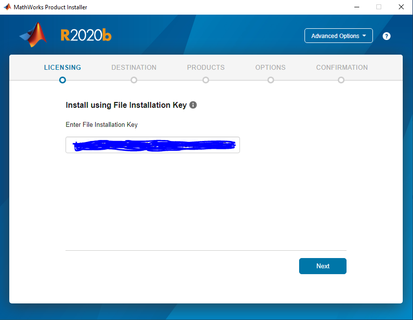
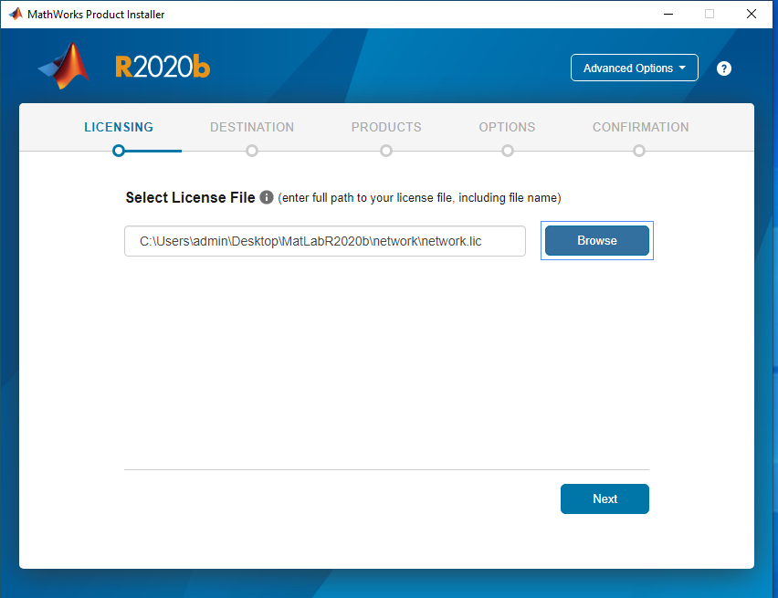
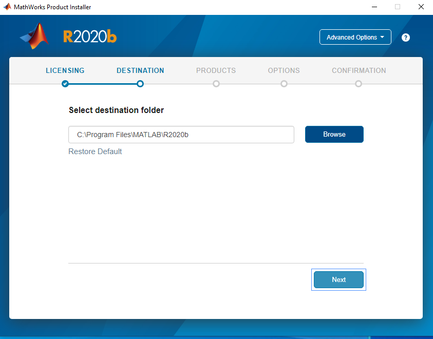
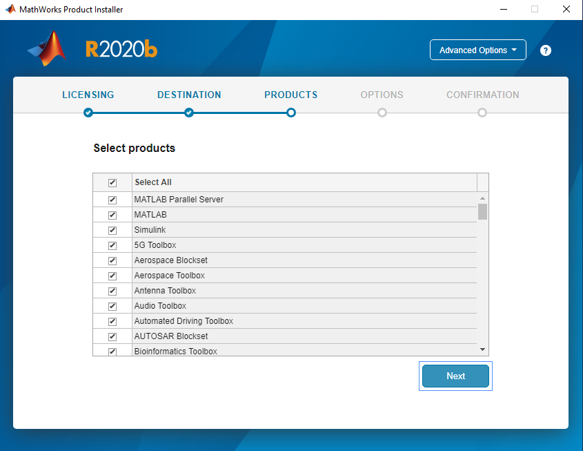
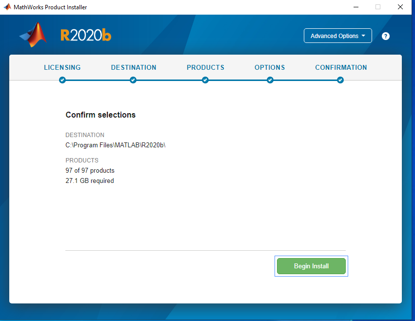
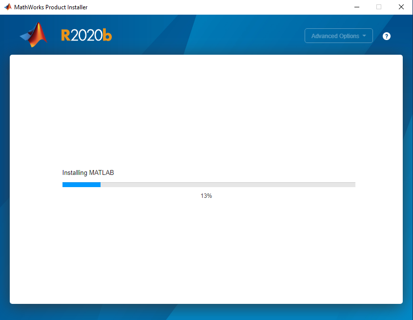
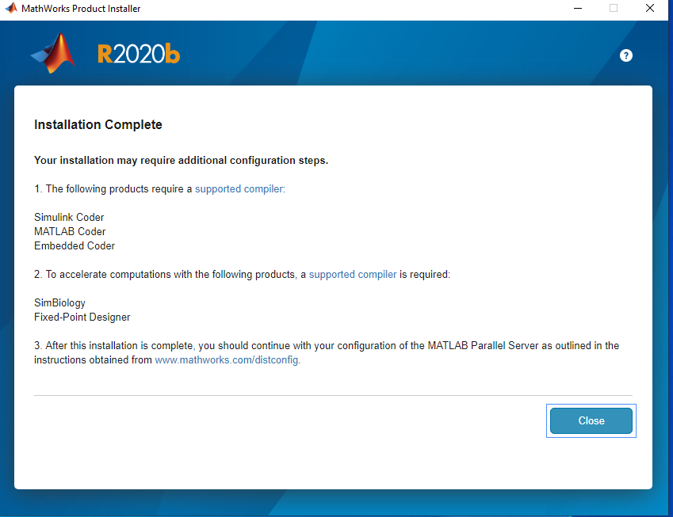
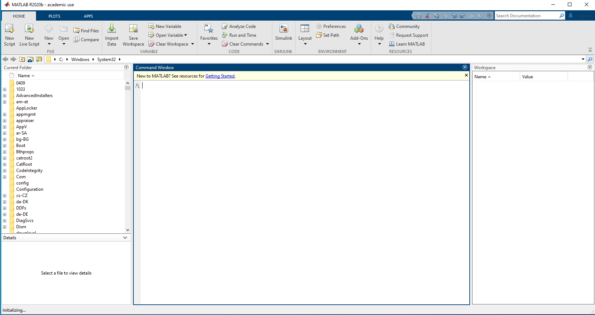

How to Install Matlab R2020b in Microsoft Window 10
Note: To install “Microsoft Visual Studio Express 2015” before installing Matlab R2020b on Win 10, Download “Microsoft Visual Studio Express 2015” form CC FTP site.
1. To open the matlab R2020b iso file and run setup. click on “YES” to accept the licence agreement & click the “Next” button.
2. Enter the “File Installation Key” and click on “NEXT” Button.
3. “Select Licence file” and Click on “Next” Button. The server license for IIT campus is “akash2.cc.iitk.ac.in”
4. Select the “Destination Folder” and click on “Next” Buton.
5. Select “Products” and click on “Next” option.
6. Select the “Confirm Selections” and click on “Begin Install” button.
7. Installation Process running wait for 15-30 (Depends on your PC) minute approx to complete installation....
8. Installation Process Complete and click on “close” button.
9. Preview of Matlab R2020b as below:
